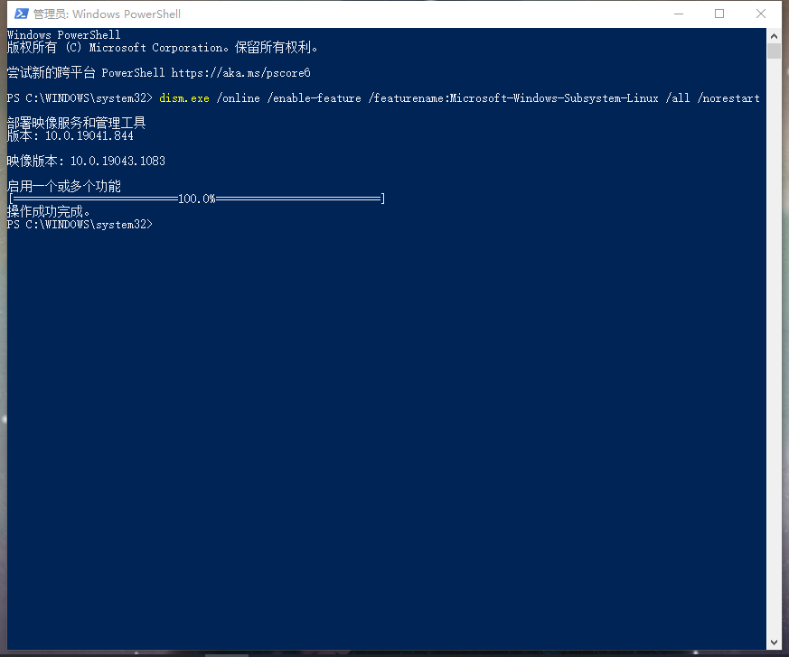

Docker学习（二）获取Docker
您可以在多个平台(Mac/Windows/Linux)上下载并安装 Docker。
1. 在Windows上安装Docker Desktop前置条件
对于仍在微软服务时间表内的 Windows 10版本，Docker 只支持 Windows 上的 Docker 桌面。
1.1 系统需求
WSL(Windows Subsystem for Linux) 2后端
- Windows 10 64bit: 家庭版或者专业版2004（build 19041）或者更高版本
Windows 10 64bit: 企业版或者教育版1909（build 18363） 或者更高版本 - 在Windows上启用WSL2特性，更多细节请参考Miscrosoft documentation.
- 在Windows 10上成功运行WSL 2需要一下先决条件：
64位处理器和Second Level Address Translation(SLAT)（二级地址转换）
4GB系统内存
必须在BIOS设置中启用BIOS级虚拟化支持。更多信息参考Virtualization. - 下载并安装Linux内核更新包。在 Windows 10 上安装 WSL | Microsoft Docs
Hyper-V 后端和Windows容器
- Windows 10 64-bit: 专业版2004 (build 19041) 或者更高版本
Windows 10 64bit: 企业版或者教育版1909（build 18363） 或者更高版本 - 必须启用 Hyper-V 和 Containers Windows 特性
- 在Windows 10上成功运行WSL 2需要一下先决条件：
- 64位处理器和Second Level Address Translation(SLAT)（二级地址转换）
- 4GB系统内存
- 必须在BIOS设置中启用BIOS级虚拟化支持。更多信息参考Virtualization.
Docker Desktop Installer包含哪些内容？
Docker Desktop包含Docker Engine，Docker CLI client，Docker Compose，Docker Content Trust，Kubernetes和Credential Helper。
使用 Docker Desktop 创建的容器和镜像在安装它的计算机上的所有用户帐户之间共享。这是因为所有 Windows 帐户都使用相同的 VM 来构建和运行容器。请注意，在使用 Docker Desktop WSL 2后端时，不可能在用户帐户之间共享容器和镜像。
嵌套的虚拟化场景，比如在 VMWare 或 Parallels 实例上运行 Docker Desktop 可能可以使用，但这并不能保证。有关的更多信息，请参考在嵌套虚拟化场景中运行 Docker 桌面。关于Windows容器
- 在Windows容器之间切换
- 开始使用windows容器（Lab）
- 适用于Windows的Docker容器平台的文章和博客
1.2 Install Docker Desktop on Windows
查看自己的电脑系统是否满足系统需求
开始-设置-系统-关于，如下示例：
设备规格
1 | 设备名称 ESR-20151030WHY |
Windows规格
1 | 版本 Windows 10 专业版 |
Enable the Windows Subsystem for Linux
- 以管理员身份打开 PowerShell 并运行:
1
dism.exe /online /enable-feature /featurename:Microsoft-Windows-Subsystem-Linux /all /norestart
结果如下：
1 | Windows PowerShell |

- Check requirements for running WSL 2
要更新到 wsl2，您必须运行 Windows 10.
- For x64 systems: Version 1903 or higher, with Build 18362 or higher.
- For ARM64 systems: Version 2004 or higher, with Build 19041 or higher.
- Builds lower than 18362 do not support WSL 2. Use the Windows Update Assistant to update your version of Windows.
To check your version and build number, select Windows logo key + R, type winver, select OK. Update to the latest Windows version in the Settings menu.
- Enable Virtual Machine feature
在安装 wsl2之前，您必须启用虚拟机平台的可选特性。您的计算机将需要虚拟化能力来使用这个特性。
以管理员身份打开 PowerShell 并运行:1
dism.exe /online /enable-feature /featurename:VirtualMachinePlatform /all /norestart
重新启动计算机以完成 WSL 安装并更新到 wsl2。
- Download the Linux kernel update package
下载最新软件包:
- WSL2 Linux kernel update package for x64 machines 针对 x64机器的 WSL2 Linux 内核更新包
- 运行上一步中下载的更新包。(双击运行——系统将提示您提高权限，选择“是”以批准此安装。)
- 将 WSL 2 设置为默认版本
打开 PowerShell 并运行以下命令，在安装新的 Linux 发行版时将 WSL 2设置为默认版本:1
2
3
4
5
6
7
8Windows PowerShell
版权所有 (C) Microsoft Corporation。保留所有权利。
尝试新的跨平台 PowerShell https://aka.ms/pscore6
PS C:\WINDOWS\system32> wsl --set-default-version 2
有关与 WSL 2 的主要区别的信息，请访问 https://aka.ms/wsl2
PS C:\WINDOWS\system32>
检查系统的处理器，系统RAM，BIOS中是否开启了虚拟化
打开 PowerShell 并运行以下命令
1 | Windows PowerShell |
2. 在 Windows 上安装 Docker 桌面
- 双击 Docker Desktop Installer.exe 运行安装程序。
- 当提示时，确保启用 Hyper-V Windows 特性或者安装 WSL 2所需的 Windows 组件选项在 Configuration 页面上被选中。
- 按照安装向导上的说明授权安装程序并继续安装。
- 安装成功后，单击“关闭”完成安装过程。
- 如果您的管理帐户与您的用户帐户不同，则必须将该用户添加到 docker-users 组中。以管理员身份运行计算机管理并导航到
Local Users and Groups > Groups > docker-users。右击可将用户添加到组中。注销并重新登录以使更改生效。3. 启动Docker桌面
点击Docker Desktop图标即可启动。
当状态栏中的鲸图标保持稳定时，Docker 桌面就会启动并运行，并且可以从任何终端窗口访问。要了解更多信息，请参见Docker设置。4. 快速入门指南
要根据需要运行快速启动指南，右键单击通知区域(或系统托盘)中的 Docker 图标，以打开 Docker Desktop 菜单，然后选择快速启动指南。
5. 更新
从 Docker Desktop 3.0.0开始，Docker Desktop 的更新将作为以前版本的 delta 更新提供。当更新可用时，dockerdesktop 会显示一个图标，指示更新版本的可用性。您可以选择何时开始下载和安装过程。
单击“下载更新”当您准备好下载更新时。这将在后台下载更新。下载更新后，单击 Update 并从 Docker 菜单重新启动。这将安装最新更新并重新启动 Docker Desktop 以使更改生效。
6. 卸载Docker Desktop
从Windows卸载Docker Desktop:
- 点击Windows的开始菜单，选择设置-应用-应用和功能
- 在应用列表中选择Docker Desktop，选择卸载
- 点击卸载确认你的选择。